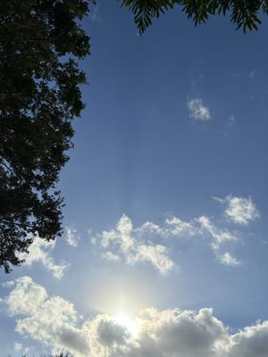

うるがいの話 ある日
最新: キリストの墓【うるがいの話 ある日】とは 一日だけのプログです
『うるがいの話』の最新一日だけのプログで、通信料が少なく経済的だ。カニの画像をクリックすると全ての日付が載る『うるがいの話』サイトを表示します
|
|
【うるがいの話】 うるがい(ｳﾙｶﾞｲ urugai)とは、『もずくがに』の名前でとても大きくなります。 |
|---|---|
|
|
【カミマヤーの話】 猫のことを方言でマヤーといいます。カミマヤー（kamimayaa）とは、神の猫のことです。 |
|
【たながぁの音楽】 たながぁ（ﾀﾅｶﾞｰ tanagaa）とは手長えびのことで、何種類かあり大きいのは車 エビぐらいになります。 |

|
【ぶながぁの話】 ぶながぁ(ﾌﾞﾅｶﾞｰ bunagaa)とは、赤い髪の毛、赤い身体、そして身長は１ｍ２０ｃｍ ぐらい、川の蟹を食べているの目撃された。場所は沖縄県国頭郡大宜味村のと ある村僕の隣近所に住んでいる爺さんから、聞いた話です。 |
|
|
【ギーマの話】 ギーマ(giima)とは、山原の里山に咲くスズランに似た、 花を付けます。実は食べられます、 気が付くと口の周りが紫になっています。 |
2026年10月10日 (土）キリストの墓
16:17

【お友だちからお願いします】三浦 しをん著 より引用
キリストの墓とピラミッド
大学の同級生から、日本にキリストの墓があると知ったのは、
もう十年以上まえのことだ。「俺、夏休みに、青森にあるキリ
ストの墓に行ってきたんだー」と自慢され、耳（と同級生の正
気）を疑った。「青森」「キリスト」「墓」という、きわめて
常識的な単語が三つ合体しただけなのに、なんと非常識的なイ
メージが喚起されることだろう。キリストはその墓の下で泣い
ていないのか？ていうか、復活し昇天したはずのキリストに、
墓が あっていいのか？はたして、青森にあるキリストの墓は
本物なのか。「本物のはずないだろ」と理性が激しく告げてい
るが、現物を見にいってみることにした。
ホー、初めて知る。ついでに、ネットで検索すると
【新郷村ミステリー】キリスト祭で神秘とロマンを体験して来
ました より引用
そもそもキリストの墓は世界に四つあるといわれています。イ
ンド・カシミール、南フランスとイギリス、そして最後に日本
の青森県新郷村です。「ゴルゴダの丘で磔刑になったはずのキ
リストは、実はひそかに日本に渡り、この村に住み１０６歳の
天寿を全うしていた」と
なんと。たまたま、テレビをみたら青森県で開催される「青の
煌めきあおもり国スポ（第８０回国民スポーツ大会）」の開会
式が映っている。その昔、体育の日、雨の予報でしたがいい天
気になりました。少し、暑さが戻っています。